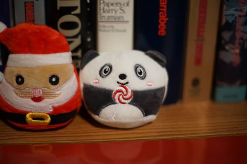

You found...


I thought he got some photos this year but his folder also only has two photos since last advent calendar. He was forced to go to 3 conventions though! I should have made him little badges hmmmm...
I decided not to do the #2025TaxRefund doll prompts this year because I knew I wouldn't have anything for most months. 2025 hasn't been a very doll filled year.
